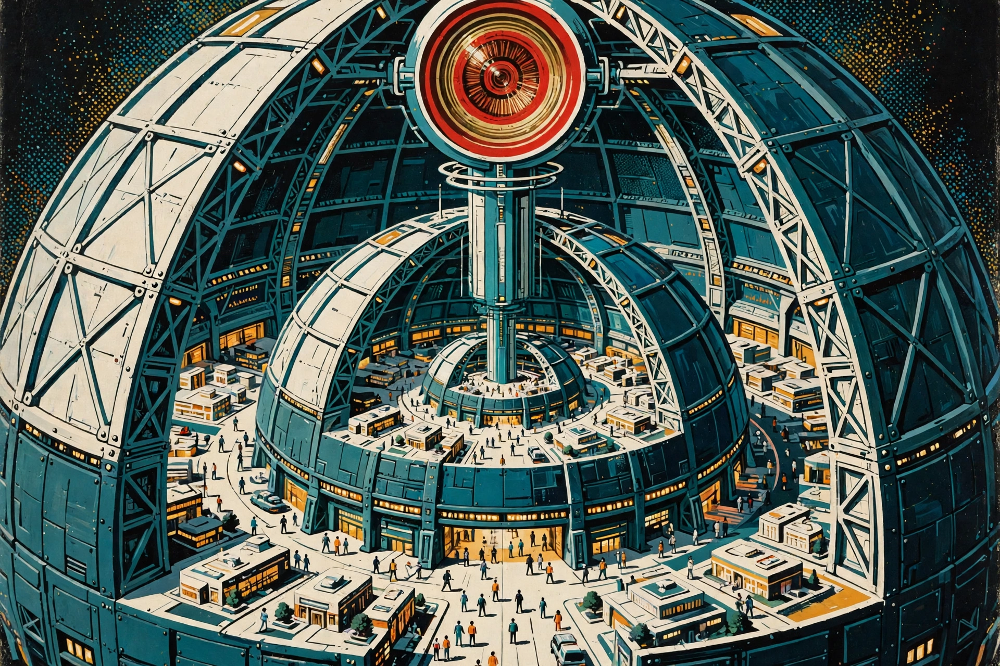

A sealed city run by a computer that needs maintenance — badly. You are a citizen with a one-way link in your head and a maintenance code to fetch. The catch is the architecture: every scale of the Complex is the same nine rooms, reflected and shrunk. Learn the layout once, and you know it at every size. That is not a shortcut in this game. That is the game.
The original Infinity Complex (1988, by Steve Neal, for The Major BBS) was one of the first multiplayer action games — a door game in a futuristic complex out of Logan's Run and Brave New World, ruled by MASTER CONTROL, a computer described at the time as “a little in need of some routine maintenance.” This cabinet keeps the city, the eye, and the errand — and rebuilds the Complex the way its name always promised: infinite, because the same level repeats at every scale.

*** MASTER CONTROL BROADCAST — ALL CITIZENS *** THE COMPLEX IS PERFECT. ROUTINE MAINTENANCE IS NOT REQUIRED. IT HAS NEVER BEEN REQUIRED.
At each scale: fight or hack the guardian drone in the Maintenance Bay, take that scale's Maintenance Code, return to the Central Plaza, and descend through the scale gate. At the fifth and smallest scale, use the last code on the Core itself. Watch the map as you go down: the rooms don't change. Only their size — and which way they're facing — does.
Here is the whole secret of the Complex, drawn flat. Three copies of the same nine rooms. The middle copy is reflected — left and right swapped — because every copy inside the Complex faces the other way. Reflect it again and it faces forward once more. The center room reflects onto itself, which is why the Plaza is always in the middle, at every scale, forever.
DORM Dormitory · LINK Link Chapel · PWR Power Conduit · AIR Air & Water · GATE Central Plaza · MNT Maintenance Bay · ARC Archive · MKT Market · SEC Sentry Post. Same nine. Every time.
The Complex is built on the same rule as these two classics. Pick a shape, then raise the iteration — the number of times the rule is applied. Nothing new is ever added. The detail was hiding in the rule from the first step.
The carpet is the Complex's floor plan with the middle removed, over and over: a building that is mostly doorway. The triangle is its cousin — three copies at half size instead of eight at a third. Different rule, same trick: a whole made of smaller copies of itself.
Every cabinet in this room teaches something by making you do it. Infinity Complex teaches fractals — and it teaches them the weird way, by making you live inside one until the pattern gets into your feet.
A fractal is a shape that contains smaller copies of itself. Not similar-ish — the same, scaled. By the third descent in this game you stopped reading room names, didn't you? You didn't need to. You already knew where the Maintenance Bay was, because you'd been there twice — at two other sizes. That moment, when knowledge transfers whole from one scale to another, is self-similarity doing its work. A fern does it with fronds, a coastline does it with bays inside bays, and your lungs do it with branching tubes — the same split, repeated until the surface is enormous and the volume stays small.
The copies in the Complex are reflected: at odd scales, east and west trade places. Reflection is the sneakiest kind of sameness, because the copy looks different while being identical — your left hand is your right hand's reflection, same hand, unusable as a substitute glove. Noticing that the Sector was the Complex in a mirror is the same skill as noticing a chess position you've played before, flipped. Two reflections cancel: reflect a reflection and the original comes back. That's why the Block faces forward again — and why the Plaza, dead center, never moves at all. The center reflects onto itself.
Ordinary shapes scale politely: shrink a square to ⅓ size and you need 9 of them (3²) to rebuild the original — dimension 2. The Sierpiński carpet shrinks to ⅓ and needs only 8 copies, because the middle is missing. Its dimension is log 8 ÷ log 3 ≈ 1.89 — not a surface, not a line, something in between. The triangle: log 3 ÷ log 2 ≈ 1.58. A dimension that isn't a whole number is the signature of a fractal, and you can compute it on a napkin from two facts: how many copies, and how much each one shrank. The Complex runs the same arithmetic in architecture: each scale is ⅓ the width, so five scales down you're at ⅓4 = 1⁄81 the size — standing in a room you could cross in twelve meters, laying your hand on a computer that runs a city a kilometre wide.
The rule that builds a fractal never says “stop.” Apply it forever and the perimeter grows without bound while the shape still fits in its original box — infinity, filed in a finite drawer. The Complex is that drawer: a sealed city of fixed size containing an endless descent, because every level holds the whole level again. This is the arcade's oldest trick wearing a new skin. Fifty-two cards held hundreds of games. One bit held every message. One nine-room floor plan holds a city you can fall into forever. The limit and the infinity are the same fact, looked at from two scales.
Infinity Complex was written by Steve Neal and released in 1988 for The Major BBS, the bulletin-board system people dialed into with modems. It is remembered as one of the first multiplayer action and battle games of its kind — a shared world, live, years before the web. The setting drew on Logan's Run and Brave New World: a futuristic complex whose citizens each carried a small link implanted in the brain — one-way, so Master Control's words of wisdom could reach them whether they wanted to hear them or not. And Master Control, the computer running the whole place, was — in the period's own dry summary — a little in need of some routine maintenance.
Its sibling door, Crossroads of the Elements (1992), built a persistent character in a world divided four ways. Infinity Complex built the opposite shape: everybody sealed inside one system, under one broken controller. This cabinet adds the one thing the original's title always implied — if the Complex is truly infinity-sized, the inside has to be bigger than the outside, and the only honest way to build that is a fractal.